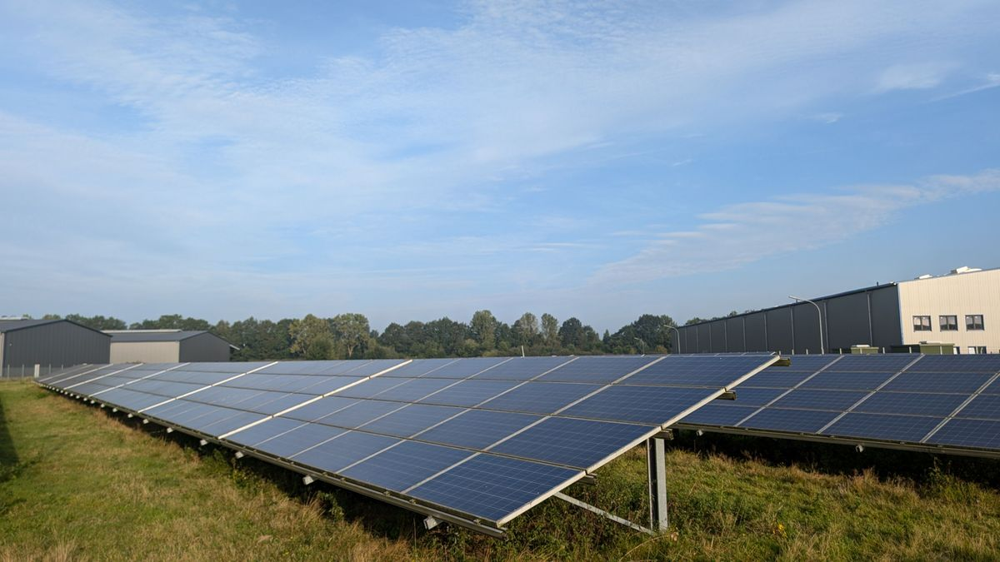

Every solar panel has a "sweet spot" angle where it captures the most sunlight. Tilt it too flat or too steep and you leave energy on the table. The good news is that finding a good angle is simple, and getting it roughly right captures most of the available energy — you don't need to be perfect.
The basic rule: match your latitude
The simplest and most reliable starting point is to set your fixed tilt angle roughly equal to your latitude. If you're at 32° latitude, a tilt of about 32° gives excellent year-round production. The panels should face the equator — south if you're in the northern hemisphere, north if you're in the southern hemisphere. Our panel tilt calculator gives you the exact angle for your location, including separate summer and winter figures.
From the field
To get the best output from panels, the tilt angle should be as perpendicular as possible to the angle of the sun. For fixed systems we usually use an angle around 45°, depending on the space available. The angle also differs from winter to summer, because the angle at which the sun's rays strike the surface changes with the season — so the ideal tilt in summer isn't the same as in winter.
Why the angle matters
Sunlight delivers the most energy when it hits a surface head-on — perpendicular to the panel. The further the panel's angle is from square-on to the sun, the more the light "spreads out" across the surface and the less energy each cell receives. Tilting the panel toward the sun's average position keeps it as close to perpendicular as possible over the day and the year.
Summer vs winter: the angle changes
The sun rides high in the sky in summer and sits low in winter, so the ideal tilt shifts with the seasons:
- Summer: the sun is high, so a flatter panel faces it better — roughly your latitude minus 15°.
- Winter: the sun is low, so a steeper panel faces it better — roughly your latitude plus 15°.
- Year-round fixed: a single angle near your latitude is the practical compromise most installations use.
Adjustable mounts that you tilt twice a year can squeeze out extra energy, but they add cost and effort. For most systems, a well-chosen fixed angle is the sensible choice.
How much does getting it wrong cost you?
Less than people fear, within reason. A panel within about 10–15° of the ideal tilt performs nearly as well as a perfect one — the losses are small. It's the big mistakes that hurt: a panel laid nearly flat, tilted the wrong way, or facing away from the equator can lose a meaningful share of its output. So aim for roughly right, and don't agonize over a few degrees.
Get your exact angle
Rather than guess, use the panel tilt calculator — enter your latitude and it returns the optimal year-round angle plus separate summer and winter angles. To see how much energy your array will produce at that angle, try the energy production calculator, and to size the array itself, the panel calculator. In hot regions, tilt and airflow also affect cooling — see our guide on solar panels in hot climates.
Frequently asked questions
What angle should solar panels be?
Start with a tilt roughly equal to your latitude for the best year-round output (e.g. ~32° at 32° latitude), facing the equator. The goal is for the panel surface to be as perpendicular to the sun's rays as possible.
Should I change my angle in summer and winter?
You can. The sun is higher in summer and lower in winter, so ideal tilt shifts — roughly latitude −15° in summer (flatter) and latitude +15° in winter (steeper). Many fixed installations just use one year-round angle.
Does panel angle really affect output much?
A well-chosen fixed angle captures most of the available energy. Anything within ~10–15° of ideal performs nearly as well; big mistakes (flat, or facing the wrong way) are what cause real losses.